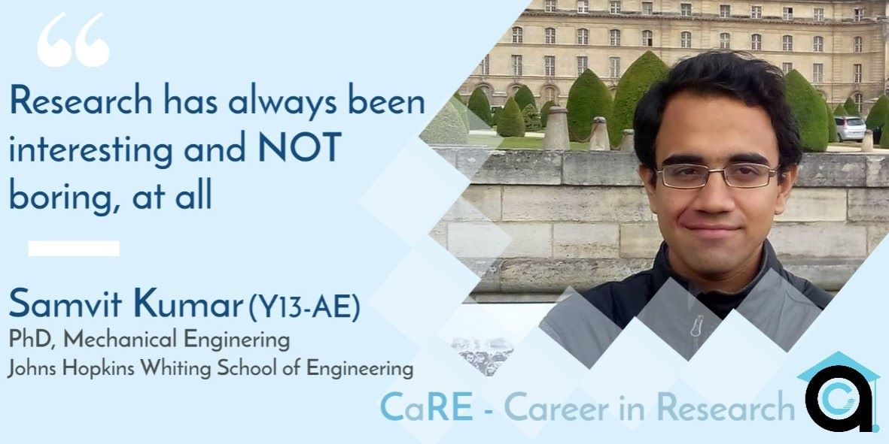

Samvit is currently a 3rd year Ph.D. student at Johns Hopkins Whiting School of Engineering in the mechanical stream. He graduated from IIT Kanpur in 2017 with B.Tech. in Aerospace Engineering. During his stay at IITK, he was an active member and Coordinator of Quiz Club. He interned at ENSTA ParisTech during his 3rd summers.

Short Introduction about your experience at your current institute - How has been your journey so far?
I joined Johns Hopkins in the fall of 2017, right after completing my undergraduate studies. Through my stay here, I have done a good amount of coursework, worked as a Teaching Assistant (TA) in several courses, and had exposure to the research culture here. I feel, there can be a lot of ups and downs in research. It can sometimes be easy on you, while it can as well be stressful at times (regular meetings, discussions, etc.), but certainly, it’s always been interesting and NOT boring, at all!
How was your experience at IITK? How has the “tough academic structure” and other opportunities on campus helped you in your journey? Also, alongside this, can you outline experiences and how they helped in deciding about and finally, pursuing research.
My experience at IITK was excellent. I was a sincere student and, attended almost all classes. I got an opportunity to work in Prof. Sanjay Mittal’s CFD lab ( Computational Fluid Dynamics) early on and further in the 1st year summers. I worked as an assistant to an undergraduate final year student who was an assistant to a PhD student. The atmosphere at the lab was quite relaxed and unencumbered. I did the standard set of courses in my 2nd year and in the following summer break, I completed the SURGE research internship. In my 3rd year summers, I did an internship in France. In the mid of 3rd year itself, I appeared for GRE, Toefl; and I must say, taking up these exams early on had an advantage. However, I believe that opting for a dual-degree could have been a better option before directly opting for PhD as it would have provided me with an even better research exposure beforehand and could have helped me make some better decisions.
How was the research exposure that you got on campus? Can you briefly outline the work that challenged you the most?
The most significant research exposure that I received while on campus was in Prof. Sanjay Mittal’s lab. My main aim while in the lab was to learn as much as I can. In the US, what I feel is, there is a kind of boss-employee relationship as opposed to a more informal prof-student relationship at IITK. However, in terms of research, it is much more collaborative in the US as compared to IITK.
What was your experience in the admission procedure?
While looking for labs to apply to, I looked at journals and wrote to people who published well in my field. I think writing to relevant people is quite important.
How do you compare the research culture at IITK as compared to that at Johns Hopkins University?
At Johns Hopkins, independent work is expected, and research is more collaborative. Here, we have a more hierarchical structure as compared to Europe and there is more work pressure, more regular presentations, and meetings with Supervisors. France has a more collegial relationship, which is quite good. Coursework is really well at Johns Hopkins, however, there are good professors at IITK as well, who take a lot of great specialization courses.
How did you see research as a career then? How has your mindset changed about it since you joined your current institute?
Academic research in the US is more managerial and I don’t find that very attractive. Industrial research is more job oriented which requires self-motivation. It is important not to get frustrated and keeping your interests alive. In those terms, a dual degree is a better option as exposure to long term projects, and defending the thesis will get you a lot of experience. Explore the domains that interest you. Give more time to your projects. Interacting and talking to people is also important.
Miscellaneous/Useful Tips
The aerospace domain mainly consists of control and dynamics, structures, propulsion, and fluid dynamics. My future plans are either to work in a research lab or become a professor preferably in India. Both Academic and Industrial internships are quite good as well. As far as UG research culture is concerned, it is better in IITK, even in terms of the prof-student relationship. One thing, I feel about strongly is, PORs are hyped and focussing on studies helps.